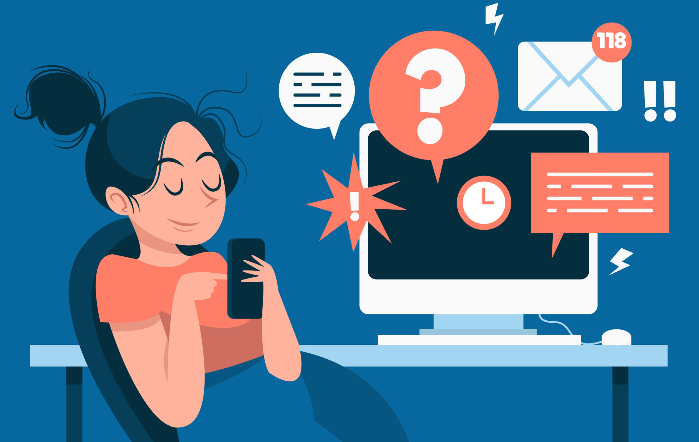

Ahora que entendemos qué es la procrastinación y sus causas, el siguiente paso es aprender cómo evitar la procrastinación y, en última instancia, vencerla. Aquí te compartimos algunas estrategias clave para superarla:

Uno de los mayores motivos por los que procrastinamos es porque la tarea parece demasiado grande o abrumadora. Al dividirla en pasos más manejables, será más fácil comenzar. Cuando completes un pequeño paso, te sentirás motivado para avanzar al siguiente. Para reforzar esta estrategia, es útil establecer metas claras y realistas. Definir objetivos diarios o semanales te ayudará a mantener el enfoque y a ver el progreso, lo que reducirá la ansiedad. Cuanto más específicos y alcanzables sean tus objetivos, más fácil será evitar la procrastinación.
Establece un periodo de tiempo específico (como 25 minutos) para trabajar en la tarea sin i nterrupciones, utilizando técnicas como Pomodoro. Después, toma un descanso corto. Este enfoque evita la fatiga mental y te impulsa a comenzar sin sentir que tienes que dedicarle horas interminables.
Identifica qué factores te distraen más y elimínalos durante tu tiempo de trabajo. Desactiva notificaciones, cierra las redes sociales o incluso crea un espacio dedicado exclusivamente a concentrarte en la tarea. El simple hecho de crear un entorno libre de distracciones te permitirá avanzar con mayor facilidad.
Estas páginas no solo servirán para cumplir con una asignación, sino que también servirán para recordarme NUNCA procrastinar.